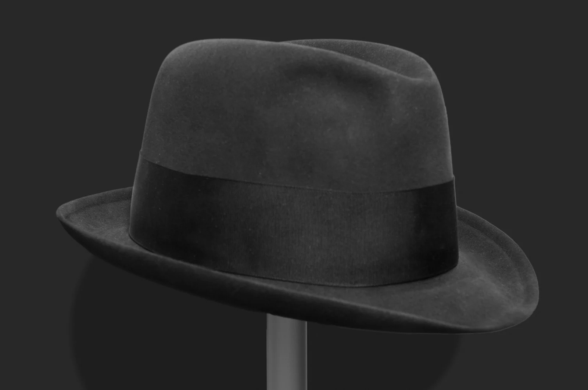
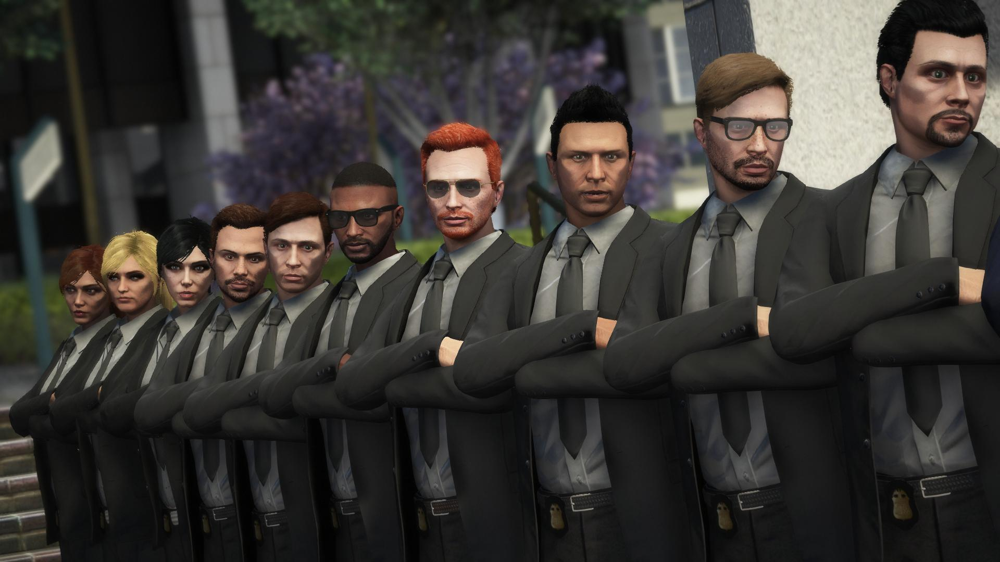
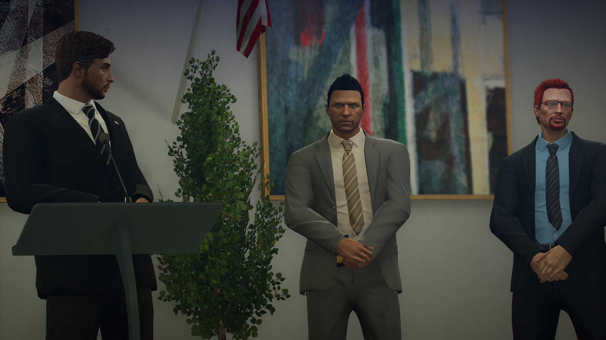
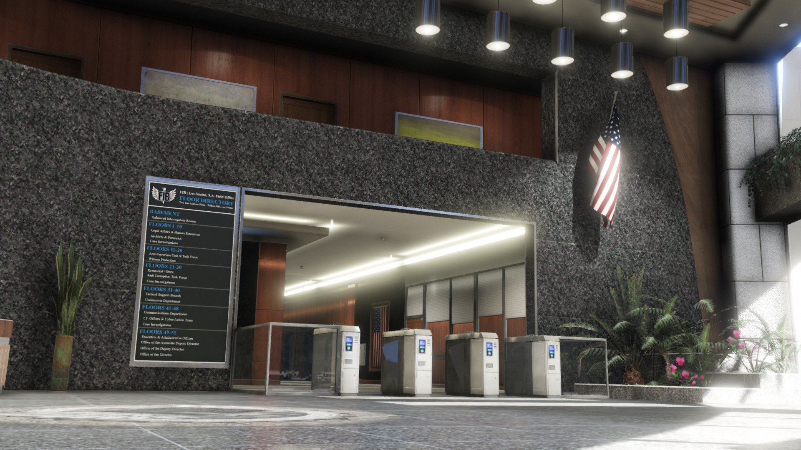

El Federal Investigation Bureau (FIB) es la agencia de investigaciones federales del estado de San Andreas. Nuestra misión es proteger a los ciudadanos de Los Santos y todo el estado contra las amenazas más peligrosas: desde terroristas y espías hasta criminales violentos, pandillas organizadas, depredadores infantiles y corruptos en posiciones de poder.

El FIB ha llevado a cabo investigaciones en el área de Los Santos desde su fundación en 1908. A principios de 1914, la Oficina abrió una oficina permanente en la ciudad bajo el liderazgo del Agente Especial a Cargo John M. Bowen.
Haz clic para leer más →

Integridad, transparencia, respeto a los derechos civiles y compromiso con la justicia. Operamos bajo la ley y protegemos la constitución de San Andreas.

El FIB es dirigido por un Director designado por el Gobernador de San Andreas. Actualmente, nuestro director es el Agente Especial Michael De Santa (personaje ficticio de GTA V).

📍 Ubicación: Low Power Street, 3909 Pillbox Hill, Los Santos
🏛️ Descripción: El imponente rascacielos del FIB domina el skyline de Pillbox Hill. Este edificio de 25 pisos alberga las oficinas centrales de la agencia, incluyendo centros de comando, salas de interrogatorio, laboratorios forenses y el centro de inteligencia nacional de San Andreas.
🛡️ Características: